Jaslok@Home brings patient registration, nurse rostering, billing, the staff ledger, patient communication and MIS reporting together in one place. Families, nurses and the office each get their own simple app, all working from the same record.
A one-minute tour: website enquiry → the office board → map-based nurse allocation → WhatsApp → billing → the patient and nurse apps. All data shown is fictional.
A hospital has an HMIS. A home-care service rarely does, even though it has the same needs: registration, scheduling, billing, staff management and feedback. The difference is that its "ward" is spread across the whole city.
If you know hospital information systems, you'll recognise every module. Each one has been reshaped for a nurse who travels to the patient instead of a patient who comes to the bed.
| HMIS module | In Jaslok@Home | Used by |
|---|---|---|
| Front office & enquiriesCRM / lead management | Website enquiry form (with prescription upload), "Request this nurse" from a nurse's profile, and an inquiry inbox where one click turns an enquiry into a case. | VisitorOffice |
| Patient registrationUHID / patient master | Families register with their mobile number, and every past and present case links to them automatically. | PatientOffice |
| Episode of carelike ADT for a ward | Each service is a case card with a clear life-cycle (Enquiry → Active → Recovered / Sent home / Closed), countdowns and renewal alerts. | Office |
| Rostering & allocationresource scheduling | A live city map of patients and nurses' homes. Click a patient to see the nearest free nurses and assign one in a click, or ask them on WhatsApp first. | Office |
| Nursing notes & handoverclinical documentation | Nurses send handover notes, patient updates and urgent alerts, with photos. The office approves them and shares them with the next nurse on that patient. | NurseOffice |
| Billing & receivablesIP billing / AR | Days × rate billing, payment status, amount paid and balance, one-tap WhatsApp payment reminders, and an itemised bill view for the family. | OfficePatient |
| HR & payroll inputsattendance / payroll | A staff ledger that fills itself: days worked, earnings at each nurse's daily rate, paid and pending payouts, and full duty history. | OfficeNurse |
| Medical recordsMRD / document management | Bills, care plans and reports attached to each case, each marked for the office only, the patient, the staff or both. | OfficePatientNurse |
| Patient portal & communication | A patient app for current care, history, bills and documents. Two-way messages with attachments, notices, and WhatsApp templates for every common message. | PatientOffice |
| Feedback & grievancequality / patient experience | Star ratings and reviews on each nurse's public profile (only from logged-in patients, marked when verified), staff-concern reports, and moderation by the office. | PatientOffice |
| MIS & reports | A one-page performance dashboard (revenue, cases, days of care, referral sources, renewals) with a plain-language summary, plus Excel import and export of every sheet. | Office |
| Inventoryconsumables & equipment | A consumables and equipment-rental sheet with stock, procurement cost and retail rate. | Office |
Every step updates the same case, so the office, the nurse and the family always see the same thing.
Nothing to install from an app store: each one opens in the phone's browser, and can be added to the home screen like an app.
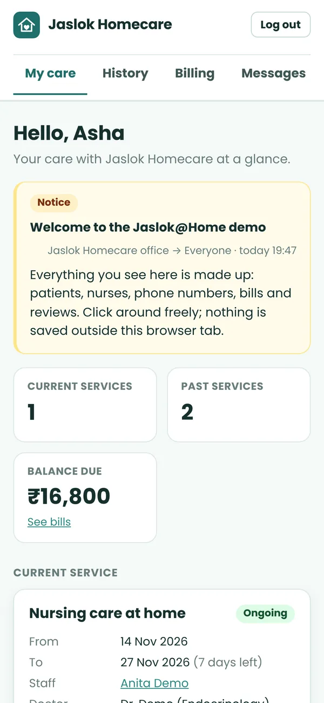
Who is coming and until when, bills and balance, documents from the office, and a way to ask a question or raise a concern.
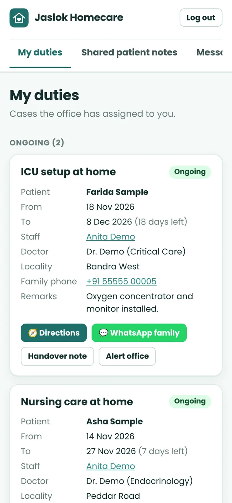
Today's duties with directions to the patient's home, notes shared by the office, handover and alert buttons, and earnings for each duty.
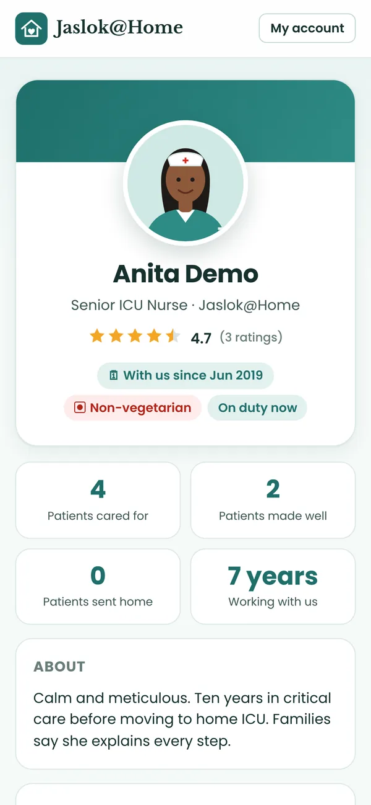
Every nurse has a profile, reached by the QR code on her business card, showing her ratings, skills and languages. Families can request her by name.
Click any screen to enlarge it. Every name, number and bill shown is fictional demo data.
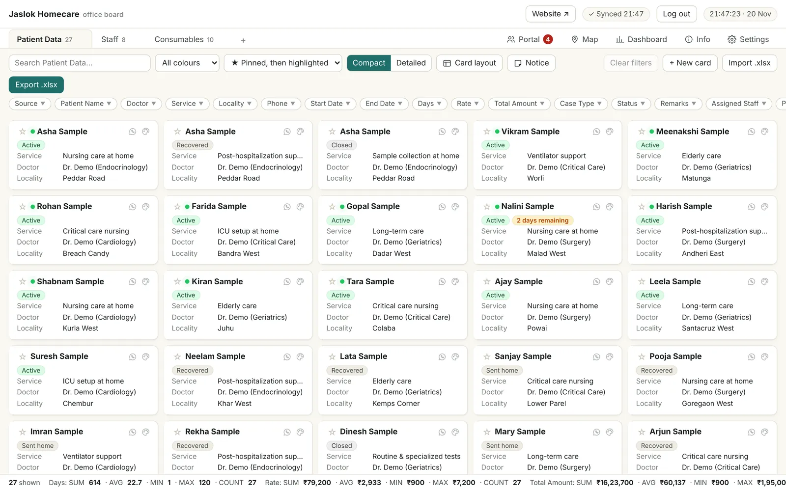
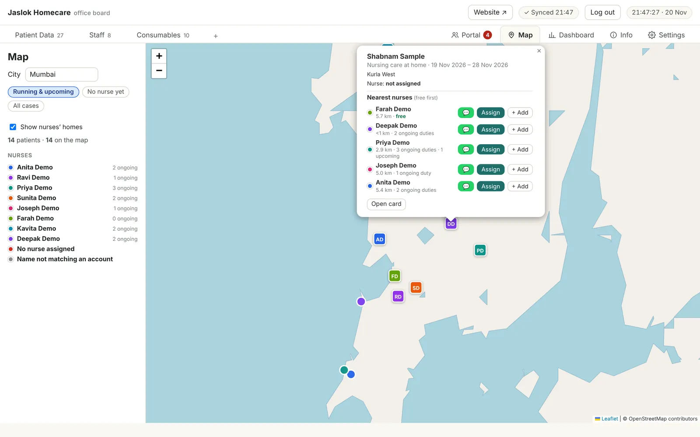
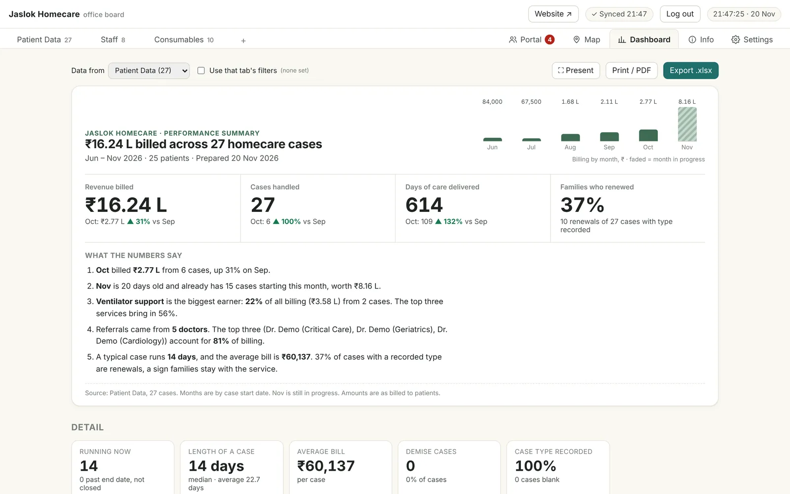
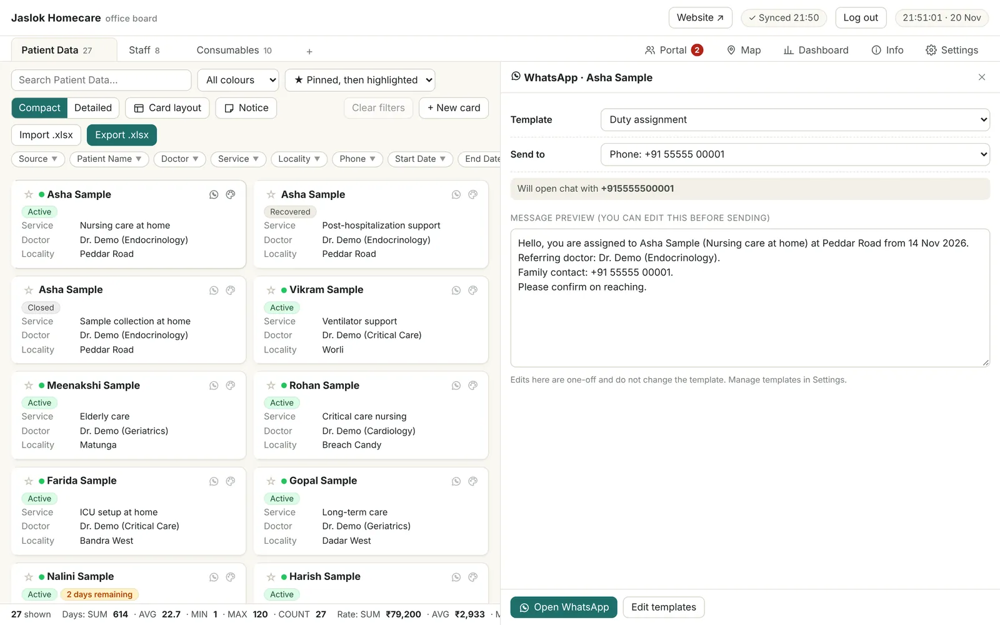
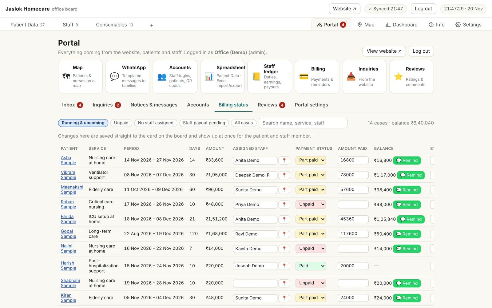
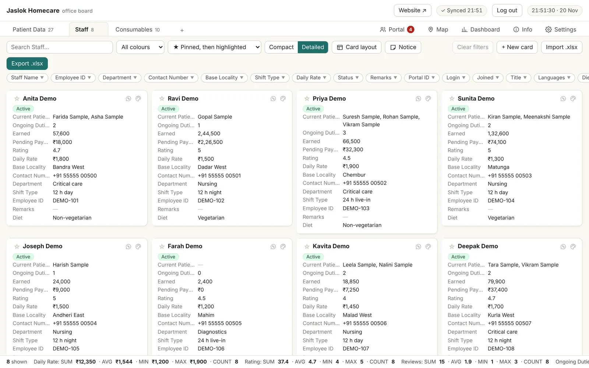
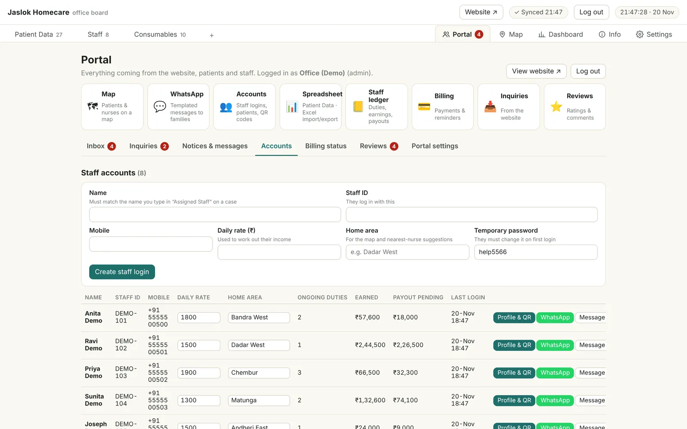
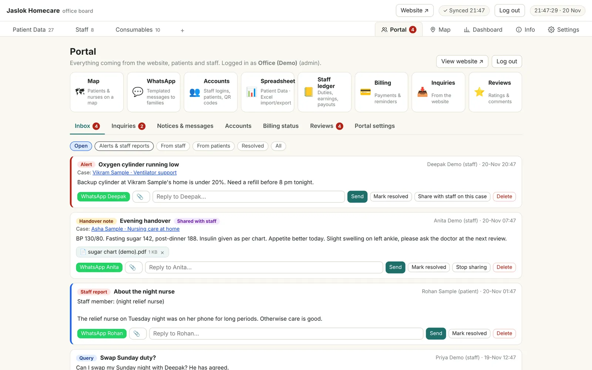
Access rules are enforced by the database itself, not just hidden on screen. This follows the principle of minimum necessary access used in hospital systems.
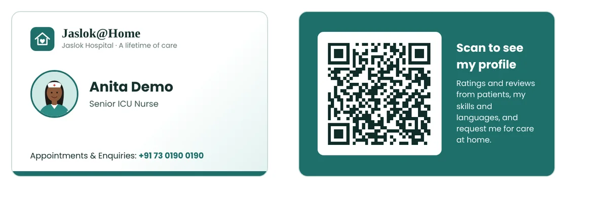
Each nurse's business card carries a QR code to her public profile, generated automatically when her login is created.
No login needed. Switch between the three views from the orange bar at the top. Everything is fictional, and nothing you change is saved.